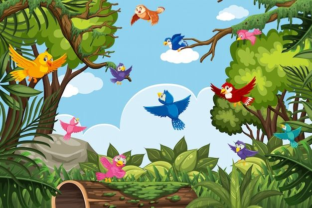

Información
ECOSISTEMA AÉREO

Los ecosistemas aéreos son aquellos donde los seres vivos se desplazan o pasan gran parte de su tiempo en el aire. En este tipo de ecosistema predominan animales como las aves, los insectos y los murciélagos, que están adaptados para volar y moverse en el aire.
Se caracterizan por factores como el viento, la temperatura y la altura, los cuales influyen en la forma en que estos seres vivos sobreviven. Aunque utilizan el aire para moverse, muchos dependen también de la tierra o el agua para alimentarse, reproducirse o descansar.
¡Atención, pilotos! Nuestra misión por el cielo ha terminado y ahora debemos reportar lo que vimos. Ingresen a nuestro Padlet: Torre de Control y dejen un mensaje con las características que descubrieron del ecosistema aéreo. ¡Llenemos el muro de nubes cargadas de información!